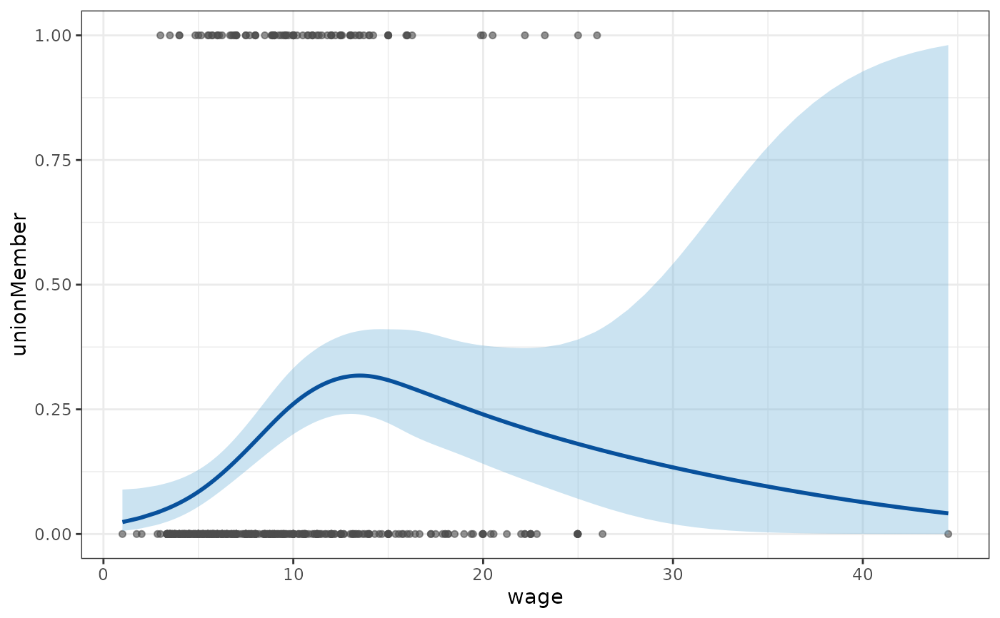

Hourly wage and trade union membership of 534 workers (the Current Population Survey of 1985, Berndt 1991), the data of M. P. Wand's penalised spline logistic regression example.
Usage
data(wageTUnion)Format
A data frame with 534 rows and 2 columns:
- wage
hourly wage (US dollars).
- unionMember
1 for a union member, 0 otherwise.
Source
Berndt, E. R. (1991). The Practice of Econometrics: Classic and Contemporary. Addison-Wesley.
References
Ruppert, D., Wand, M. P. and Carroll, R. J. (2003). Semiparametric Regression. Cambridge University Press.
Examples
data(wageTUnion)
# the probability of union membership as a smooth function of the wage
fit <- semireg(unionMember ~ s(wage, bs = "os", k = 15), family = binomial, data = wageTUnion, prt = FALSE)
anova(fit)$smooth
#> term variance logLik logLik.without LRT p.value
#> 1 s_wage 0.6171738 -237.6536 -245.2499 15.19253 4.854346e-05
#> test
#> 1 0.5 chi2(0) + 0.5 chi2(1)
semipred(fit, "wage", "wage", prt = FALSE)$plt
